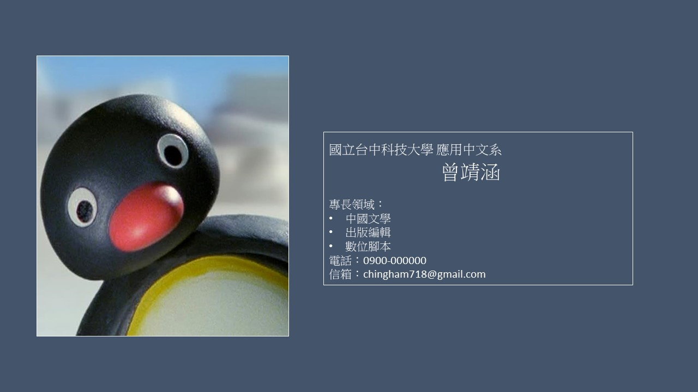

<body>
<!-- A-Frame 場景根元素 -->
<!-- mindar-image：設定 AR 標記檔案路徑、自動開始與 UI 顯示 -->
<a-scene
mindar-image="imageTargetSrc: targets.mind; autoStart: true; uiLoading: true; uiError: true; uiScanning: true;"
color-space="sRGB"
renderer="colorManagement: true; physicallyCorrectLights: true"
vr-mode-ui="enabled: false"
device-orientation-permission-ui="enabled: false"
>
<!-- 資源預載：貼圖 -->
<a-assets>

</a-assets>
<!-- 環境光，避免場景全黑 -->
<a-light type="ambient" intensity="3"></a-light>
<!-- 相機：關閉 look-controls，鎖定位置 -->
<a-camera look-controls="enabled: false"></a-camera>
<!-- 定義第 0 號 AR 標記 -->
<a-entity mindar-image-target="targetIndex: 0">
<!-- 顯示名片的平面，並掛上 touch-transform 組件 -->
<a-plane
src="#resultImg"
width="1.2"
height="0.7"
position="0 0 0"
touch-transform
></a-plane>
</a-entity>
</a-scene>
